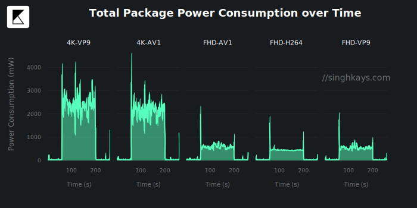
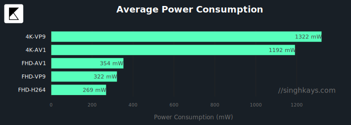
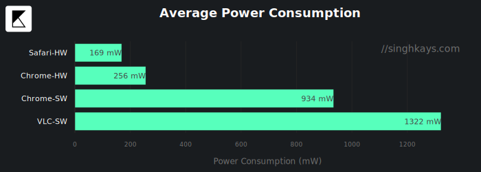
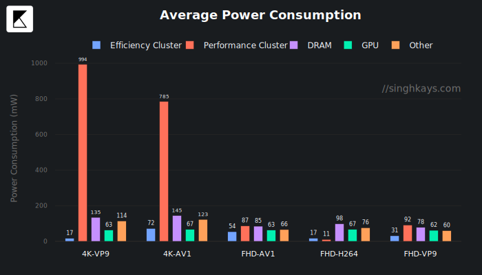
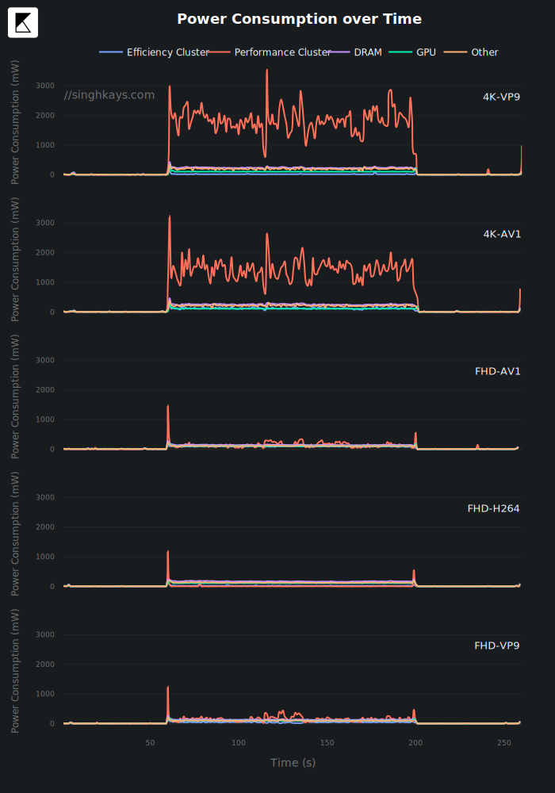
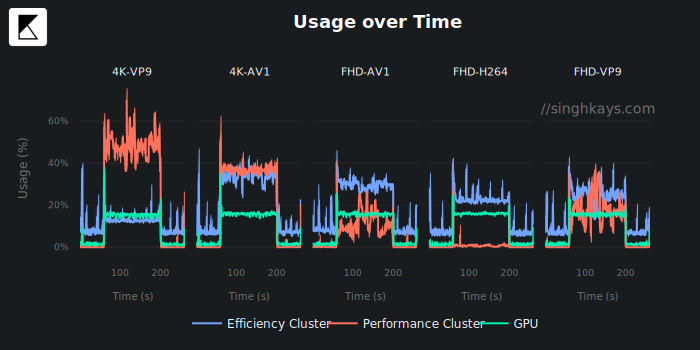
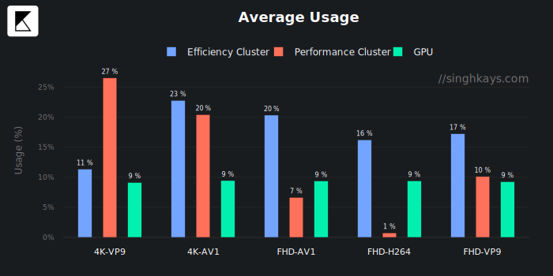
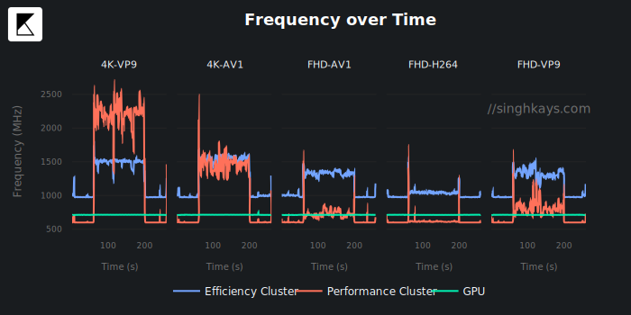
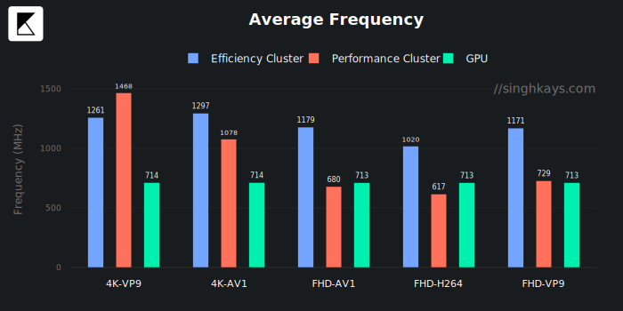

In Part 1 of this series, I explored Apple M1’s power consumption while streaming video from YouTube and Netflix using Chrome and Safari. Here’s a quick recap of the most important findings in Part 1:
Recap
- The GPU usage on Safari hardware decoding is nearly 0%.
- In Safari hardware decoding, the GPU frequency is 0 Hz for a sustained period of time. Does this mean the M1 chip can turn the GPU off? This is quite possible because if you look at the Average Power Consumption chart for the same test (Safari hardware decoding), the GPU’s average power consumption was 2mw! Let me type that again. Over 4-5 minutes where the Apple M1 chip played a 4K video in Safari browser, the GPU consumed only 2 milliwatts!
- The “Other” component is consuming ~2x the power in Safari vs. Chrome. This is most likely due to the T2 chip being leveraged because of hardware DRM implementation.
For the complete set of findings, read Apple Silicon M1 Power Consumption Deep Dive Part 1: Safari vs Chrome
Testing Methodology
Software & Hardware
- MacOS 11.2.2 running in safe mode to limit the effect of background processes and other applications on power consumption
- VLC 3.0.12.1 (Apple Silicon version)
- I’m using VLC because QuickTime player does not open WebM files.
- Mac Mini M1 16GB RAM, 256GB SSD (I didn’t have a MacBook so this test represents the power of the M1 components, not the overall system power)
- Peripherels attached: Apple Magic Keyboard and Magic Trackpad (Bluetooth)
Power Consumption Measurement
Power Consumption was measured using Apple’s powermetrics utility. powermetrics is a Mac-only command-line utility that provides many high-quality power-related measurements. It is most useful for getting CPU, GPU and wakeup measurements in a precise and easily scriptable fashion (unlike Activity Monitor and top)
Below is a sample log from powermetrics output after running the following command:
sudo powermetrics -i 1000 --samplers cpu_power,gpu_power -a --hide-cpu-duty-cycle --show-usage-summary --show-extra-power-info -u ~/powerlogs.txt
*** Sampled system activity (Thu Feb 11 00:10:50 2021 -0800) (1004.97ms elapsed) ***
**** Processor usage ****
E-Cluster Power: 14 mW
E-Cluster HW active frequency: 1031 MHz
E-Cluster HW active residency: 11.15% (600 MHz: 2.8% 972 MHz: 88% 1332 MHz: 2.5% 1704 MHz: 3.0% 2064 MHz: 3.5%)
E-Cluster idle residency: 88.85%
P-Cluster Power: 16 mW
P-Cluster HW active frequency: 712 MHz
P-Cluster HW active residency: 2.34% (600 MHz: 90% 828 MHz: .42% 1056 MHz: 1.4% 1284 MHz: 3.0% 1500 MHz: .49% 1728 MHz: .79% 1956 MHz: 1.2% 2184 MHz: .59% 2388 MHz: 1.0% 2592 MHz: 0% 2772 MHz: .40% 2988 MHz: .20% 3096 MHz: 0% 3144 MHz: .20% 3204 MHz: .36%)
P-Cluster idle residency: 97.66%
ANE Power: 0 mW
DRAM Power: 14 mW
Clusters Total Power: 30 mW
GPU Power: 14 mW
Package Power: 99 mW
**** GPU usage ****
GPU active frequency: 709 MHz
GPU active residency: 1.51% (396 MHz: .05% 528 MHz: 0% 720 MHz: 1.5% 924 MHz: 0% 1128 MHz: 0% 1278 MHz: 0%)
GPU requested frequency: (396 MHz: 0% 528 MHz: 0% 720 MHz: 1.5% 924 MHz: 0% 1128 MHz: 0% 1278 MHz: 0%)
GPU idle residency: 98.49%
GPU Power: 14 mW
I wrote a custom Python script to parse out these logs and plot the graphs below. For our purpose, I extracted the following fields:
| Extracted Field | Description | Represented as |
|---|---|---|
| E-Cluster Power | Total power consumption of the 4 high-efficiency cores | Efficiency Cluster |
| P-Cluster Power | Total power consumption of the 4 high-performance cores | Performance Cluster |
| DRAM Power | Power consumption of the embedded RAM | DRAM |
| GPU Power | Power consumption of the M1 GPU | GPU |
| Package Power | Total power consumption of the M1 chip including the CPU, GPU, DRAM and other components like Thunderbolt and SSD controller, media decoding engines, ISP, Secure Enclave etc. | Other |
For an overview of the M1 architecture, see Apple’s official product page and the press release.
If you’re interested in exploring the code that was used to parse the logs, visit the following Github repo
Videos Tested
I’m still testing the same video — “Japan in 8K” — that I used in Part 1.
The difference is that this video is now played locally using the venerable VLC player. The video was download to disk using the youtube-dl utility. I focused on two of the most common resolutions today - 1920x1080 (aka Full HD/1080p) & 3840x2160 (aka 4K/2160p) and downloaded the AV1, VP9 and H.264 versions of this video. This gave us the following test matrix.
| Resolution → Codec ↓ | FHD | 4K |
|---|---|---|
| H.264 | ✅ | ❌ |
| VP9 | ✅ | ✅ |
| AV1 | ✅ | ✅ |
Like before, there was an idle period of 60 seconds before and after playing the video in both scenarios.
The Results
Power Consumption
Right off the bat, I noticed a couple of things:
- 4K VP9 power consumption is pretty surprising. Given the testing in Part 1, I expected it to be lower for local playback as well. What this means is that VLC is not using M1’s hardware VP9 decoder.
- The power consumption for AV1 software-decoding is lower than VP9 software-decoding. Not bad for a codec that’s only a couple of years old. Of course, this is because of the fantastic work done by the dav1d decoder team.


For reference, here’s the power consumption of decoding 4K VP9 from Part 1 using M1’s hardware-decoders (represented by Safari-HW and Chrome-HW in the chart. VLC software-decoding is represented as VLC-SW).

Breaking down the power consumption per component, I noticed:
- “Performance Cluster” power consumption for 4K VP9 is significantly higher than 4K AV1 while “Efficiency Cluster” power consumption is lower.
- While decoding Full-HD AV1 is not far off of the power consumption of solving Full-HD H.264 using the H.264 hardware decoder in M1. This certainly bodes well if Apple decided to support AV1 software decoding in iOS devices.


CPU & GPU Usage
Looking at the CPU and GPU usage leads to some interesting observations:
- 4K VP9 decoding continues to use more of the “Performance Cluster” compared to 4K AV1
- GPU usage is similar across all the videos
- “Performance Cluster” usage is almost 0% while decoding Full-HD H.264


CPU & GPU Frequency
The frequency charts only confirm the previous discoveries. Specifically:
- While decoding 4K VP9, the “Performance Cluster” almost hits 2.5 GHz, explaining the higher power consumption.
- AV1 decoding continues to surprise despite being done through software. It’s more efficient than VP9 software-decoding.


Conclusion
I was a little disappointed that the M1 cannot hardware decode local VP9 files like it can with Safari. After some internet search-fu, I landed on this Twitter thread that contains a possible explanation.
1. WebM support is inner of WebKit (and only with MSE), so we can't play WebM with AVFoundation.
— りんすき (@428rinsuki) August 5, 2020
2. We can use VP9 HW Decoder with MP4 file (not WebM), but currently opt-in, so must be enable with new API https://t.co/Xe1R6bMjCX and QT looks like doesn't calling this API.
So there’s a chance that this will improve, but for now, at least the 80% scenario of streaming VP9 in the browser works well.
What I’m most excited about is the state of the AV1 codec. I’ve written extensively about AV1 before here, here, and here. AV1 is well on its way to becoming the default codec of the web with traction from YouTube and Netflix. In these tests, AV1 fared much better than VP9, even with software decoding, and it’s only going to get better from here. We’re starting to see hardware decoders for AV1 ship from Nvidia, Intel, AMD, and other manufacturers. It’s only a matter of time before similar hardware decode support comes to Apple Silicon.
Stay tuned for the updates by subscribing to the RSS Feed or the Mailing List.
Buy
If you’re planning on buying an Apple M1 product, you can support this blog by using my affiliate links below:
MacBook Air M1 (2020)
- Apple MacBook Air with Apple M1 Chip (13-inch, 8GB RAM, 256GB SSD Storage) - Space Gray
- Apple MacBook Air with Apple M1 Chip (13-inch, 8GB RAM, 512GB SSD Storage) - Space Gray
- Apple MacBook Air with Apple M1 Chip (13-inch, 16GB RAM, 1TB SSD Storage) - Space Gray
MacBook Pro M1 (2020)
- Apple MacBook Air with Apple M1 Chip (13-inch, 8GB RAM, 256GB SSD Storage) - Space Gray
- Apple MacBook Pro with Apple M1 Chip (13-inch, 8GB RAM, 512GB SSD Storage) - Silver
- Apple MacBook Pro with Apple M1 Chip (13-inch, 16GB RAM, 256GB SSD Storage) - Space Gray
Contact
Reach out if you have any questions! Feel free to follow me on
- Twitter - @singhkays
- LinkedIn - https://www.linkedin.com/in/singhkays/